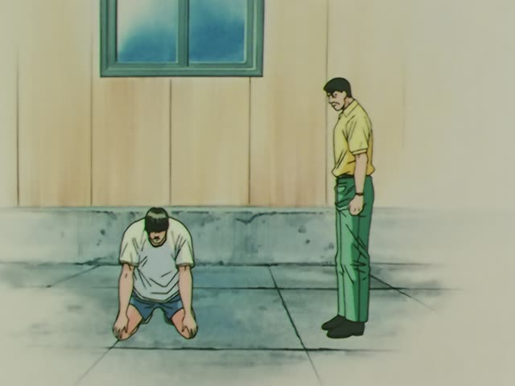
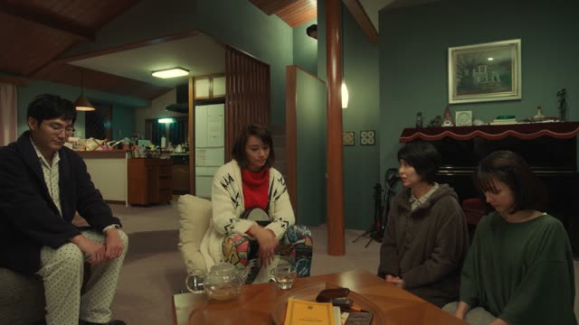
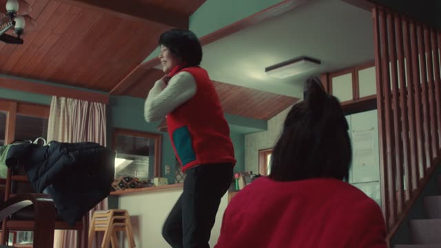
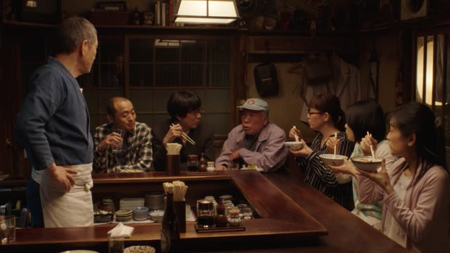

～ている (Habit)
| Polite | ～ています full, careful・～てます spoken |
|---|---|
| Casual | ～ている full, careful・～てる spoken |
Same meaning: "do regularly". Only the politeness changes.
Built on the て-form, so verbs ending in む, ぶ, ぬ get で: 読む → 読んでいる, 遊ぶ → 遊んでいる.
Aggretsuko · Season 1, Episode 10
ここ いつも使ってるんです。
"We always use this place."
～ている isn't only "doing right now". With words like いつも (always) or 毎日 (every day), it's a habit: something you do again and again. It's the verb's て-form + いる: 走る → 走って → 走っている.
On this card, she tells the staff this is their usual spot: いつも使ってる = "always use". てる is the spoken ている, and んです makes it polite.
Kekkon Dekinai Otoko · Episode 9
毎日ジムで鍛えてるんだ。
"I work out at the gym every day."
毎日 makes it a habit. On this card, he shows off his body: 鍛えてる = "train, work out", every day, not just now.
Quick Examples
A coworker asks how you wake up so easily.
毎朝コーヒーを飲んでいます。
"I drink coffee every morning."
Verbs whose て-form ends in で take でいる: 飲んで → 飲んでいる.
PoliteSomeone asks if you do any sports.
週に3回ジムに通っています。
"I go to the gym three times a week."
通う: to go somewhere regularly (school, gym, work).
PoliteA friend asks why you look so tired lately.
最近、毎晩ゲームしてるんだ。
"I've been gaming every night lately."
CasualA friend admires the bread you brought.
いつもこの店で買ってるよ。
"I always buy it at this shop."
CasualWith and without
今朝、走りました。
"I ran this morning." It happened once.
毎朝、走っています。
"I run every morning." It's part of your routine.
Examples from Media

Slam Dunk · Episode 76
毎日 思ってます。
"I think about it every day."
毎日 + ています: every day, again and again.

Quartet · Episode 4
いつも 茶馬子さんの話 されてます。
"He's always talking about you, Chamako."
いつも + されてます (polite "does"): a habit.

Legal High · Episode 1
私 ブログで 毎日 日記を書いてるんです。
"I write a diary on my blog every day."
書いてる = 書いている. Polite because of んです at the end.

Shirokuma Cafe · Episode 29
僕は週に２日動物園でバイトをしています
"I work part-time at the zoo two days a week."
週に２日: "two days a week". バイト: part-time job.

Quartet · Episode 2
いつも飲んでる。
"I always drink it."
いつも + 飲んでる.
The Wind Rises
いつもああして待ってるんだよ。
"She always waits like that."
いつも + 待ってる: every day, not just today.

Shirokuma Cafe · Episode 21
毎日つけてるんだよ。
"I write in it every day."
A diary, kept up every day. てる is the short ている.

Midnight Diner: Tokyo Stories · Season 2, Episode 4
最近 仕事終わりに よく来てるよな。
"She's been coming here a lot after work lately."
よく (often) + 来てる: a recent habit.
Further Reading
A Dictionary of Basic Japanese Grammar
Entry "iru²" (be -ing) · pp. 155–157